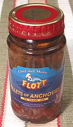

Notice: what the Swedes, Danes and Finns call
"Anchovy" (Ansjove) is totally different from what the rest of the world
calls Anchovy. Theirs are sprats canned in a special spiced pickle.
Many attempts to make Jansson's
Temptation have been totally ruined by not knowing this. The Swedes
call our Anchovies "Sardeller". For details and buying them, see our
Sprats page.
Anchovies are a very important culinary ingredient, used in many salad dressings and sauces. A small amount of anchovy can significantly increase savory (umami) elements in a recipe without imparting a noticeable fishy flavor. Other recipes use plenty of anchovy. Our Spanish Salad Dressing has lots of anchovies, and has been well liked by people who claimed they hated anchovies.
Fresh Anchovies can be prepared in the manner given on our California Anchovys page.
Canned Anchovies
Salted and canned anchovies are made by a method very similar to that used
to make fermented fish sauce (Roman garum, Thai nam pla). The difference is
that the heads and guts are removed before packing in salt - preventing
the fish from digesting themselves down to clear liquid. The fish are
layered with salt in barrels and rocks are put on top to keep them
submerged for 6 to 10 months at controlled temperatures. After this
time they are skinned, filleted and packed.
From Roman times anchovies were salt packed but the oil pack cans
so familiar today came into use during the 1800s. Unlike other canned
products, no heat is applied when packing anchovies.

Storing: I have noticed that unopened canned anchovies tend to lose their firmness in a few months at room temperature and can no longer be removed from the can without braking up. Anchovies in jars can be more conveniently stored in the fridge for longer keeping, even up to a year after opening.
Buying: Morocco produces about 24% of the world's supply of canned anchovies and nearly half those imported into North America. Unfortunately I have been very disappointed in Moroccan anchovies. I've had cans of Moroccan anchovies (multiple brands) that seemed mostly bones, fins and scales mixed in with a few over salted fillets that disintegrated to mush if touched. Those packaged for top brand names like Crown Prince, are better, but still not as good as from other sources.
Spanish anchovies are widely considered of finest quality, but are pretty much unavailable to most of us in North America. Italian anchovies can be found put up in glass jars (photo at left) and sometimes cans. A jar is costly, but has lots of fillets in it and is a good investment. It'll keep over a year in the fridge, and after the anchovies are gone you can use the anchovy flavored olive oil.
I've purchased canned anchovies from Peru and Chili that were excellent. They were put up in the standard 2oz cans, and have the storage problem I mentioned above.
Norway used to be famous for anchovies, but the canneries have been replaced by oil refineries since discovery of North Sea oil.
Very fine anchovies are prepared in various ways in Spain and parts of Italy for local consumption. They are served as tapas and snacks in bistros and bars throughout Spain. American tourists won't touch them - and the Spaniards laugh.
Salted Anchovies
From Roman times anchovies have been salt packed, but are not easily
available that way in North America. Many chefs insist the salt packed
are superior, with a meatier flavor and firmer texture. They are whole
headless fish just as they came from the salt cure barrels, packed in
5 inch cans with lots of coarse salt salt and a little brine. They need
to be de-boned, but that's easy. For details see our
Salted Anchovies page.
Anchovy Paste
Anchovy paste, while not considered quite as good as whole anchovy
fillets, is very convenient, especially for people who don't use a lot
of anchovies. Once opened it is kept in the refrigerator and will
probably be good for at least a year. The photo specimen is Roland
brand from Spain, and is of good quality. Ing: Anchovies, salt, olive oil,
acetic acid.
Asian Dried Anchovies

Salted and dried anchovies are a very important flavoring item in
Southeast Asia and Korea, used in many ways. Japanese Niboshi or Iriko
are properly juvenile sardines rather than anchovies, but are almost
always labeled "Anchovies" in English, and are pretty much
indistinguishable from Anchovies. This important seafood product has
its own Dried Anchovies page.
Fish Sauces

The highest grade Fish Sauces are made in Thailand and Vietnam from
Anchovies and only Anchovies. These sauces are essential to the cuisines
of most of Southeast Asia, and were also essential to the cuisine of the
Roman Empire. These sauces are now making inroads into the cuisines of
North America, especially in California, and are begining to revive in
Italy. They have their own
Fish Sauces page.